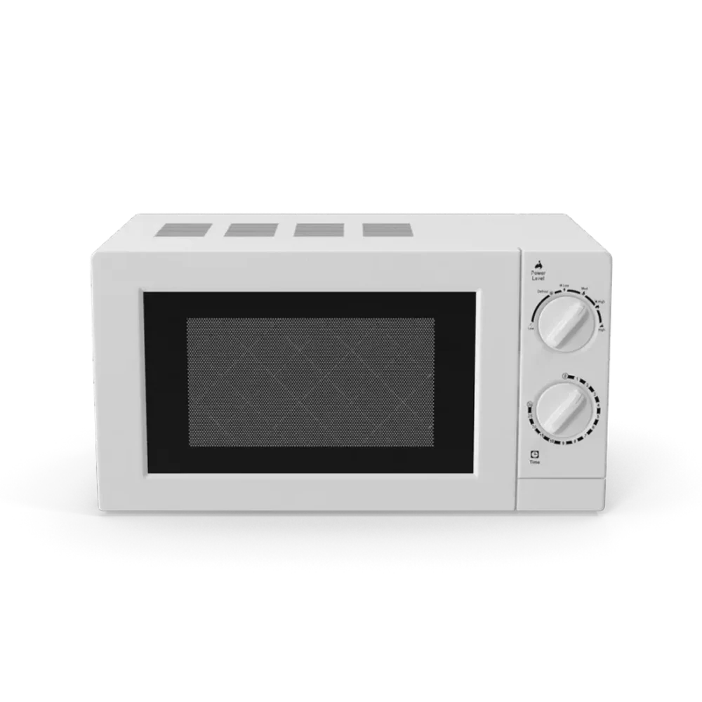

Выбор редакции
Выбор редакцииДОМА ХОРОШО
БОЛЬШЕ УЮТА.
МЕНЬШЕ ХЛОПОТ.
КАЖДЫЙ ДЕНЬ.
Бытовая техника,
которая берёт домашние дела на себя.

В центре вниманияМикроволновая печь «Комфорт»Познакомиться ближе ↗
Категории товаров
ВЫБИРАЕМ ДЛЯ ВАС
Техника, с которой дома удобнее
Для кухни, стирки и любимых домашних привычек.


ПОМОЩНИКИ ДЛЯ ВАШЕГО ДОМА
Уютный дом.
Всё начинается с деталей.
Подберите технику для кухни и дома —
а время оставьте для себя.
Удобный выбор
От полезного прибора до готового домашнего комплекта.
Всё под рукой
Корзина сохранит выбранные товары в браузере.
Без лишних шагов
Соберите комплект и проверьте заказ перед оформлением.